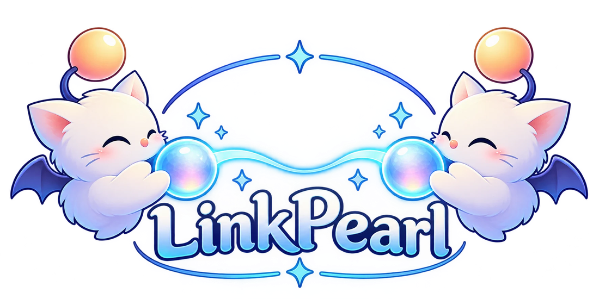

Linkpearl Sync

Your friends see your look.
No one else does.
- End-to-end encrypted
- No files stored on a server
- No account
- Open source, self-hostable
Add the repository to Dalamud
https://linkpearl-sync.github.io/repo.json
/xlsettings › Experimental › Custom Plugin Repositories: paste, click +, then save. Then /xlplugins › Linkpearl Sync. Requires Penumbra and Glamourer.
You choose who
Right-click to ask, one click to accept.
Your whole look
Penumbra and Glamourer, plus animations, VFX, sounds, Customize+, Heels, Honorific, Moodles.
Compared with a Mare-style sync
| Mare-style sync | Linkpearl Sync | |
|---|---|---|
| Your mods | Stored on their server | Straight to your friend, never stored |
| Who can read them | The server operator | Only your friend |
| Account | Required | None |
| If the service closes | Everything stops | Switch services, stay paired |
| First load | Fast, served by the server | Depends on your friend's connection |